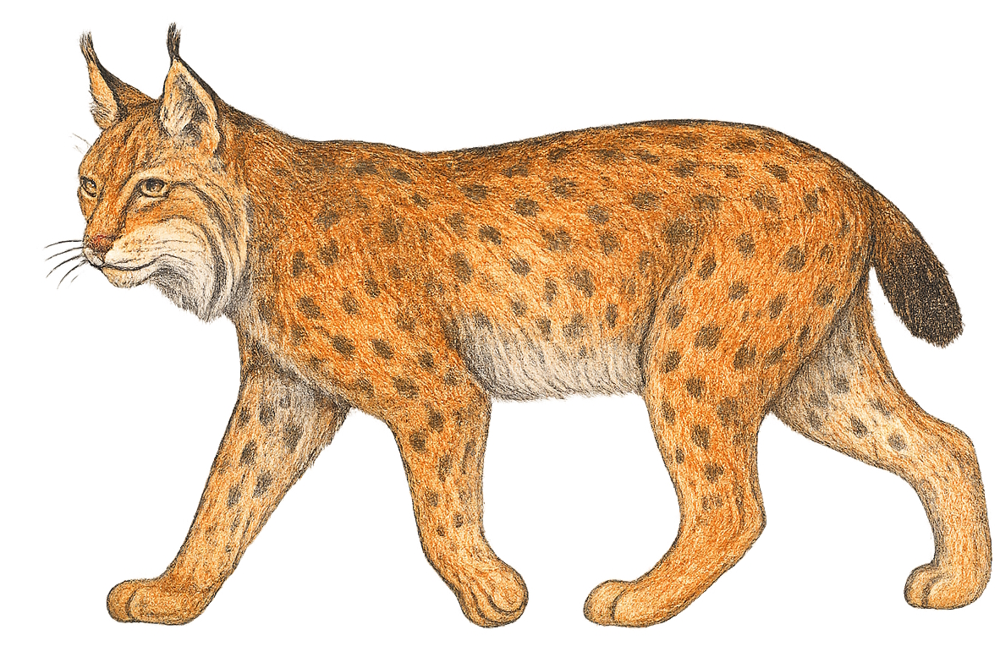
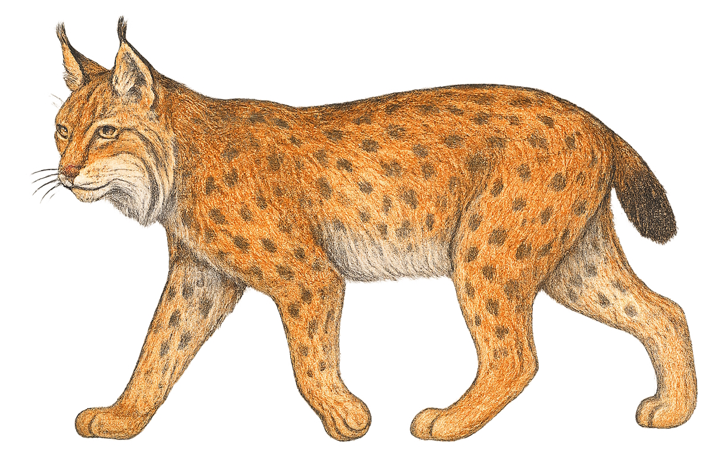

Allgemeines
Der Luchs ist die größte Wildkatze Europas. Er wird 80 bis 110 Zentimeter lang, hat einen etwa 20 Zentimeter langen Schwanz mit schwarzer Spitze und wiegt zwischen 15 und 25 Kilogramm. Typisch sind die Pinselohren – kleine Haarbüschel an den Ohrspitzen – und das gefleckte Fell, das eine gute Tarnung bietet. Luchse können in der Wildnis bis zu 15 Jahre alt werden. Ursprünglich waren sie in weiten Teilen Europas verbreitet, heute leben sie vor allem in Mittel- und Osteuropa. In Deutschland gibt es kleine, aber wachsende Bestände, vor allem im Bayerischen Wald und im Harz.
Lebensraum
Luchse bevorzugen große, zusammenhängende Wälder mit vielen Versteckmöglichkeiten. Besonders in Mittelgebirgen und Alpenregionen finden sie geeignete Lebensräume. Wichtig sind ihnen dichte Wälder, in denen sie ungestört leben und jagen können. Auch felsige Landschaften werden genutzt, wenn sie genügend Deckung bieten.
Nahrung
Die Hauptbeute des Luchses sind Rehe, die er meist durch Anschleichen und einen kurzen, überraschenden Angriff erlegt. Ein Luchs benötigt etwa ein Reh pro Woche, um satt zu werden. Daneben frisst er auch Hasen, Füchse und kleinere Säugetiere. Natürliche Feinde hat der Luchs kaum, höchstens Wölfe können in seltenen Fällen eine Gefahr darstellen.
Besonderheiten
Der Luchs ist ein typischer Lauerjäger: Er verfolgt seine Beute nicht über lange Strecken, sondern schleicht sich an und nutzt dann den Überraschungseffekt für einen kurzen, schnellen Angriff. Seine Pinselohren verbessern vermutlich das Gehör, und sein geflecktes Fell macht ihn im Wald fast unsichtbar. Da Luchse sehr scheu sind, bekommt man sie in freier Natur nur äußerst selten zu Gesicht.
Gefährdung und Schutz
Der Luchs war in Deutschland lange Zeit ausgerottet, wurde aber durch Auswilderungsprojekte wieder angesiedelt. Heute steht er streng unter Schutz. Sein Bestand bleibt dennoch gefährdet, da Luchse große, ungestörte Reviere brauchen und durch Straßen und Siedlungen leicht beeinträchtigt werden. Zudem kommt es immer wieder zu illegalen Abschüssen. Um die Tiere zu schützen, werden Lebensräume vernetzt und ihre Wiederansiedlung gefördert.
So klingt der Luchs
Zurück zur Startseite